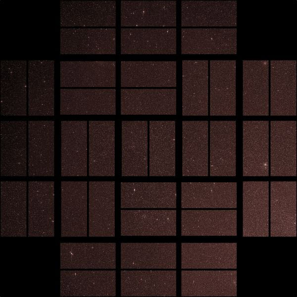
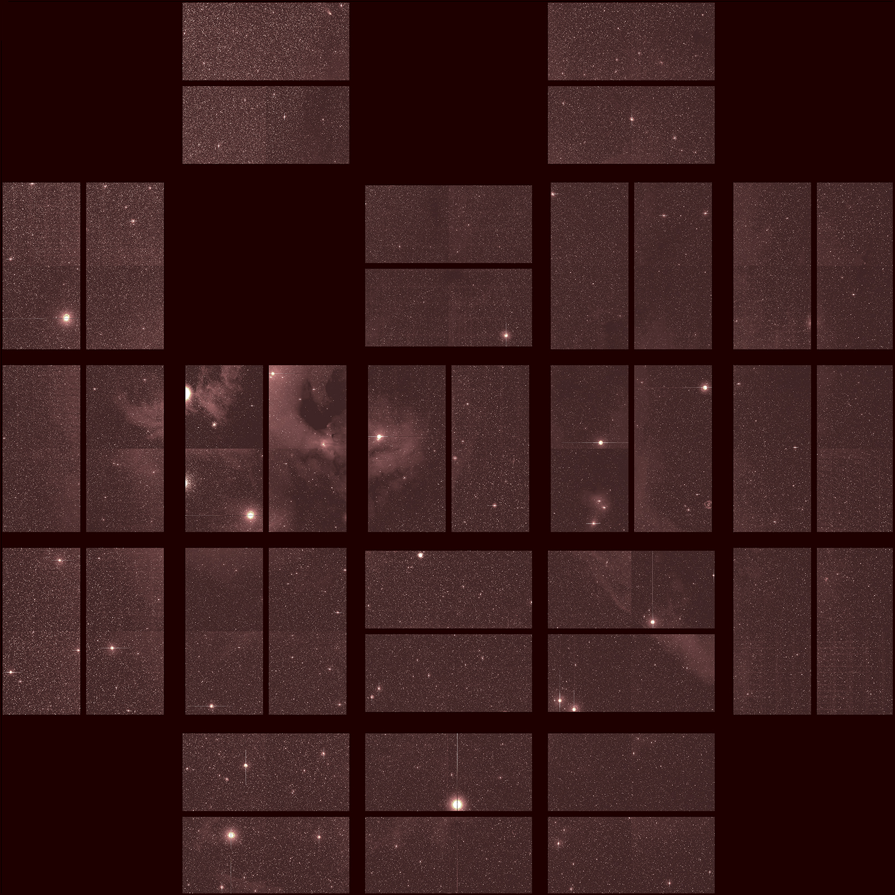
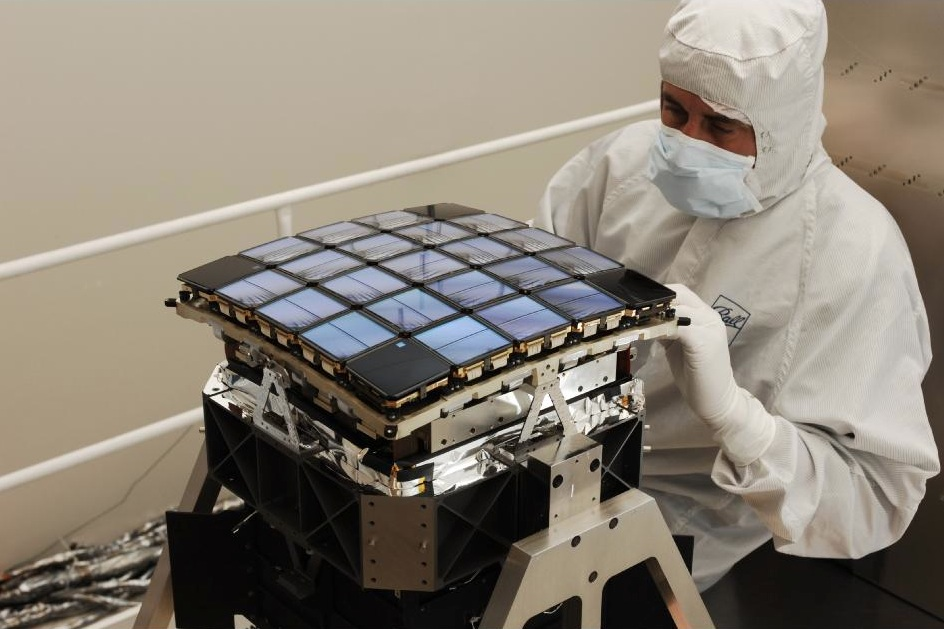
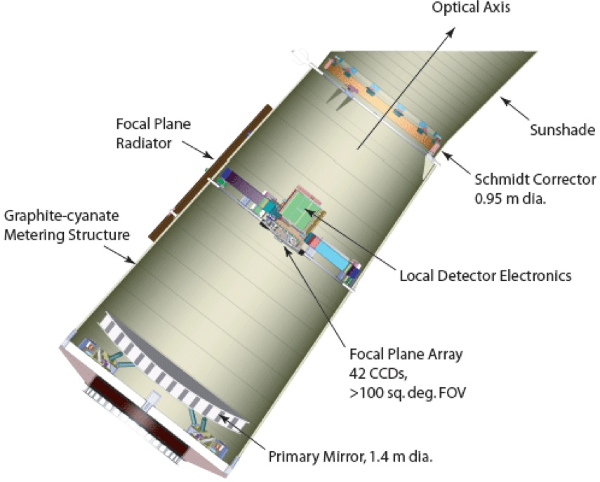
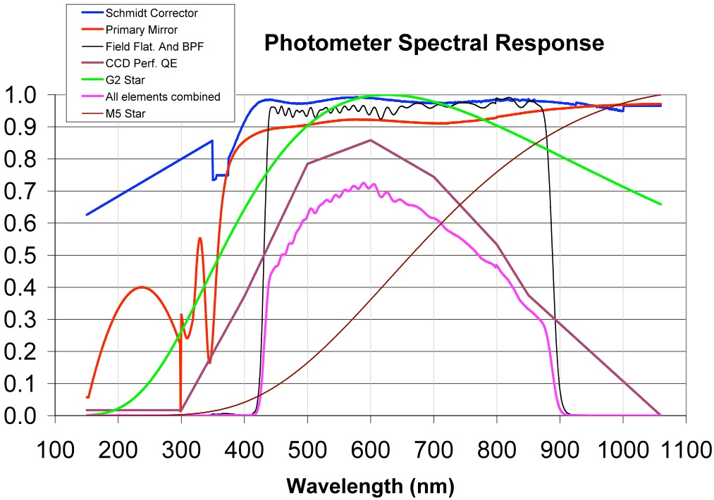
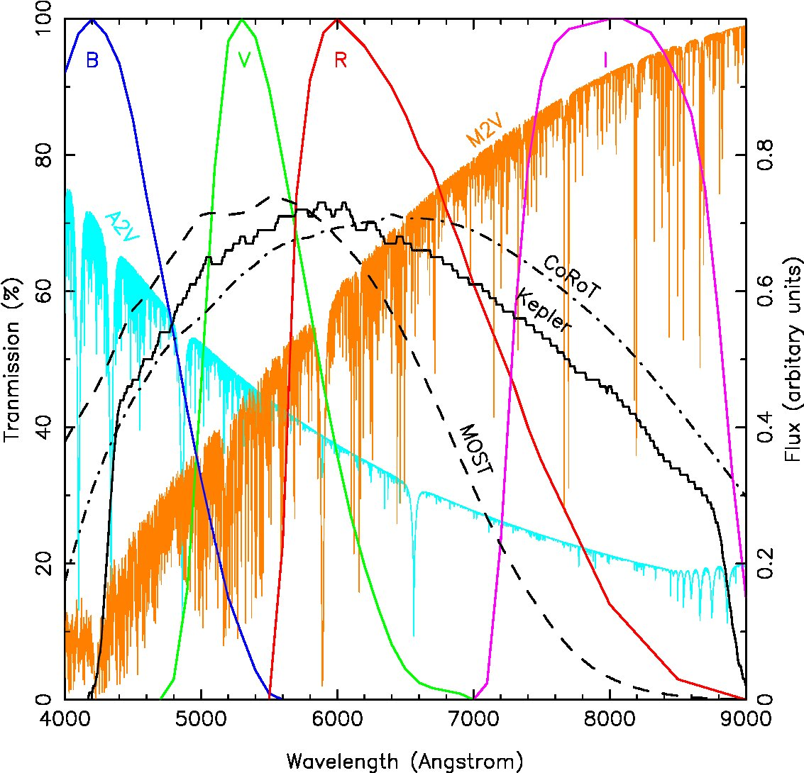
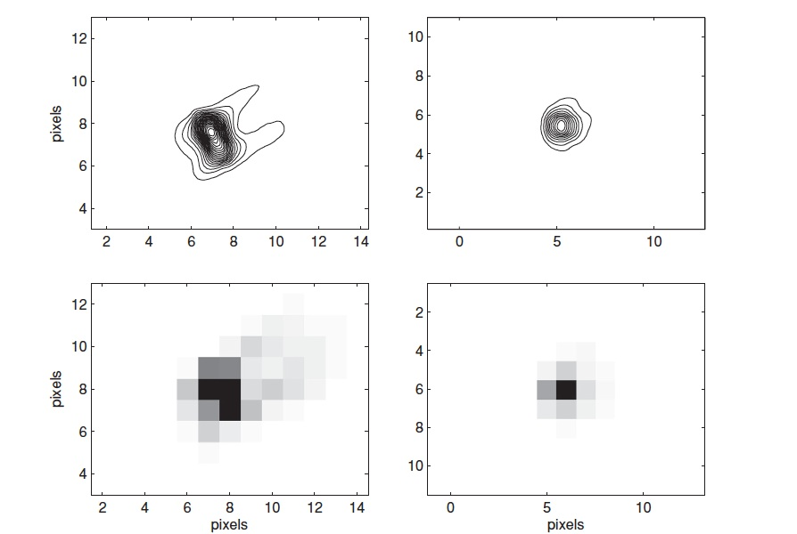
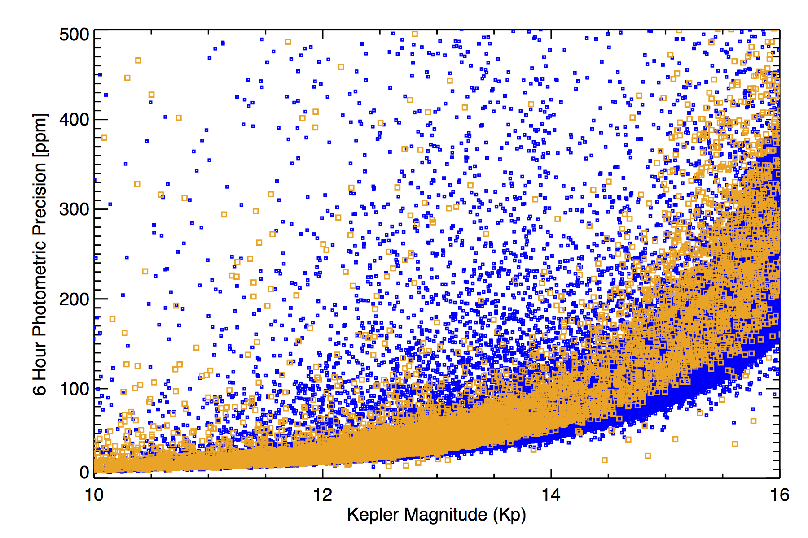

Orbit
Kepler is in an Earth-trailing heliocentric orbit, which insured a thermally stable environment and provided the ability to remain on a single pointing for the duration of the prime Kepler mission. Quarterly rolls were performed – one roll every 93 days – to reorient the solar arrays. With each roll, the stars in the field of view land on different regions of the detector relative to their pre-roll position, introducing quarterly discontinuities in the light curves. In the K2 mission, the spacecraft is rotated and different fields are observed every ~80 days in order to prevent sunlight from entering the telescope.
Field of view
The Kepler photometer consists of 21 CCD modules (each with two 2200x1024 pixel CCDs). Each module covers 5 square degrees on the sky. The full 116 square degree field of view on the sky is illustrated below, specifically for the single field that was observed during the prime Kepler mission. Tables that contain the corners of each Kepler CCD module are available for download (ascii and Microsoft Excel). Corners are provided in J2000 celestial coordinates for all four seasonal roll rotations.
An image of the field of view observed in the Kepler mission is shown below.

The K2 mission observes a different field every ~80 days. For comparison to the prime Kepler mission field, the field of view of K2 Campaign 2 is shown below (note the two dead modules).

Instrument response
The Kepler spacecraft hosts 0.95-m aperture Schmidt telescope. The primary instrument aboard Kepler is the focal plane array consisting of 21 science and 4 Fine Guidance Sensor CCD modules. Field flattener lenses on each module map the spherical telescope image surface onto the flat CCD chips, and define the overall wavelength bandpass. Each science module is an array of 2200x2048 pixels. These 21 modules each have 4 output channels, for a total of 84 channels and 94.6 million active pixels that view the sky, with additional masked real pixels and virtual pixels for collection of collateral data. As of May 2014, two of the modules are no longer in working order (illustrated in the above image).


The Kepler focal plane detectors and the optical elements within the Kepler telescope are illustrated above (from the Kepler Instrument Handbook).
The Kepler photometer utilizes one broad bandpass, ranging from 420 to 900 nm. Tables containing the Kepler instrument response curve in hi-res and low-res tabulations are available for download. The shape of the bandpass, shown below, was chosen to contain most of the optical spectrum. This response curve was derived during pre-flight testing and represents the laboratory calibration of the Kepler photometer.

The below plot shows the optical element components of the Kepler Instrument Response compared to approximate M5 and G2 stellar spectra. The total photometer spectral response is a combination of the transmission functions of all optical elements, including the Schmidt corrector, the primary mirror assembly, the field flatterner lenses on each CCD module, and the wavelength dependent quantum efficiency of the detectors. The front surfaces of the field flatteners are anti-reflection coated; a bandpass filter coating was applied to the back surfaces. At long wavelengths the coating was designed to minimize fringing.

The figure below shows a comparison of the Kepler, MOST, CoRoT and Johnson response curves (kindly provided by Jason Rowe and extracted from 2009IAUS..253..121R). The transmission functions for the Johnson B,V,R,I filters have been scaled to peak at 100% transmission. The spectrum for an A2V star is shown in cyan, which peaks in the UV and the spectrum for a M2V star is shown in orange which peaks in the infrared. The two spectra have been scaled to have equal flux in the Johnson V filter.

Pixel response function
Kepler has an image scale of 3.98 arcseconds per pixel and a pixel size of 27 × 27 microns.
The design requirements for Kepler emphasize photometric stability and minimizing noise sources. Users should recognize that the optimum focal plane geometry for flux collection will not in principle provide the most compact point spread function, as is usually desired for imaging experiments.
The Kepler point spread function varies considerably across the focal plane due primarily to the Schmidt optics, which provide a large FOV approximately 16° in diameter. The Project quantifies the total response of the instrument to incident light in terms of its pixel response function (PRF), which represents the observed appearance of point sources. The PRF is a combination of the optical design, focus setting, CCD detector mechanical and electronic properties, and the temporal sequence of spacecraft pointing stability during an observation. Not only does the PRF depend on location within the focal plane, as defined by a source's CCD channel, row and column location, but also depends on the intrapixel location of the source centroid (peak incident light). A detailed summary of the characteristics and modeling of the PRF is provided by Bryson et al. (2010).
Users should note that light curves are produced using optimal aperture photometry in the PA module via straightforward addition of the flux within the optimal source aperture. No PRF-fitting is involved in this photometry, but each source's optimal aperture is defined by the interpolated PRF at the source location, coupled with the source brightness and a model of the background.
Distribution on the focal plane
Concentrating light in the brightest pixel will degrade the resulting photometry by increasing sensitivity to image motion, and constrain the ability to determine image centroids. Conversely, a too-broad PRF will include additional background flux and noise, reducing the signal-to-noise ratio of the source. Therefore, the optimal pixel response function for Kepler science operations was carefully designed to maximize photometric stability. The Project uses these metrics to quantify the PRF: the brightest pixel flux fraction (BPFF) and the 95% encircled energy diameter (EE95), evaluated for the spectrum of a G2V star. Level 1 requirements are: BPFF should be < 60%; the EE95 is required to be < 7.0 pixels.
During the commissioning period for Kepler, the focus was adjusted, and the resulting PRFs measured, using a large set of test stars. Shown below is a representation of the PRF at two locations in the focal plane. On the left: a PRF from near the edge; on the right: a PRF near the center. The pixelated image is shown below and a contoured version above. (Adapted from Bryson et al. (2010)).

For K2, image quality continues to vary with position in the focal plane, with the 95% encircled energy diameter ranging from 3.1 to 7.5 pixels and a median of 4.2 pixels. The percentage of point-source flux concentrated in the center pixel is between 20% and 62%, with a median value of 45%.
Vignetting
Vignetting affects the PRF at increasing distance from the center of the FOV, a consequence of the Schmidt optical design and large FOV. Somewhat less than half of the active FOV is unvignetted, and another ~30% is affected, but considered usable. Vignetting is negligible within 4.6° of the center, and increases to ~11% at the edge of the FOV at 6.94 degrees off-axis. The area of sky which is vignetted < 11% is 151.2 square degrees, and the sky area imaged onto active pixels with < 11% vignetting is 101 square degrees since there are gaps between modules, a gap between the two CCDs on each module, and inactive areas on each CCD.
Backgrounds
Source photometry is affected by both celestial and instrumental backgrounds. During nominal science data collection, pixels designated as background are measured in addition to target pixels. These data are used to correct the photometry within the Photometric Analysis (PA) pipeline module. For Kepler, a separate set of background apertures are collected across the focal plane, and a background measure is derived from these pixels. Users should note that the pipeline does not use pixels within the source aperture to measure the local background.
Components
Celestial backgrounds arise from a number of sources, both from spatially smooth, diffuse light which affects all pixels in the aperture, and from transient events, which affect a few pixels:
- Zodiacal light, produced by sunlight scattered from dust in the ecliptic plane.
- Diffuse scattered starlight, produced by dust in the Galaxy. In the fixed field of view for the Kepler mission, the Galactic component shows a spatial gradient, increasing at lower Galactic latitudes.
- Unresolved starlight. Given the 4x4 arcsec dimensions of the pixels, some light in the aperture arises from faint field stars. As with the diffuse Galactic emission, the contribution from unresolved starlight increases with decreasing Galactic latitude.
- Cosmic ray impacts which corrupt individual pixels. The pipeline flags and removes cosmic ray events from the pixel counts, within the PA pipeline module. Each cosmic ray event is replaced with a temporally local average of the pixel's time series without the cosmic ray pixel events.
- Surrounding sources, i.e. the residual wings of the PSFs produced by nearby
stars which may overlap the PSF of the target. A correction for contaminating flux in the source aperture
produced by surrounding sources is applied within the PDC pipeline module - a single valued subtraction, termed the crowding metric. In
ideal situations the PSFs of neighboring stellar sources would not
change over time, expect for possible intrinsic source
variabilty. Observers should be aware that spacecraft operations may
induce changes in the source PSFs, through focus changes, and
spacecraft motions (jitter and drift). Motion of the source center
during an observing season, even at the millipixel level, will
induce variations in the contaminating flux, introducing small
levels of noise into the light curve.
Instrumental backgrounds include the detector bias level (also termed black level), which is removed in the CAL pipeline module, scattered light, unexpected electronic issues discovered during pre-flight characterization of the detectors, and some features seen during early flight operations, e.g., "Argabrightening", an anomalous full-field illumination. Spatially varying backgrounds produced by the detector electronics are fully described in the Kepler Instrument Handbook.
Measurement and removal
Kepler constructs a background flux map using a set of target pixels specifically assigned for this purpose. Background "targets" are small (nominally 2 x 2 pixels) postage stamp images which measure the background signal in the long cadence observations. Since backgrounds must be estimated and removed from all observed sources in the FOV, a method was adopted to interpolate background values from all targets pixels in a channel using the background apertures in that channel. A maximum of 1125 background apertures and 4,500 pixels (~4 pixels per target) are allocated for each of the 84 output channels. These background targets are selected to optimize a 2D polynomial representation of the background flux distribution, derived separately for each channel.
For robust fitting, background apertures should be uniformly distributed on each CCD array. To mitigate edge effects, more background apertures are positioned at the frame edges. During target management, background pixels are selected, avoiding stars and locations affected by charge bleeds.
Background pixels are calibrated in the same manner as source pixels in the CAL pipeline module. Background channel maps are generated in PA; interpolated background values are then subtracted from the pixel values prior to aperture photometry.
A measure of the celestial background in the Kepler FOV is provided in the Kepler data release notes. The figure below shows the background flux time series for the Q0+Q1 observing season, derived from the reprocessed data released on 2010 June 15. The curves show average over all mod.outs (CCD channels), the modules furthest from (mod.out 2.4 = channel 4) and nearest to (mod.out 24.4 = channel 84) the Galactic plane. The vertical offset is produced by the spatially-dependent Galactic emission; the horizontal trend is caused by variation in the zodiacal light. The narrow spikes visible in all 3 curves are Argabrightening events. From this plot, a few items are evident:
- The temporal and FOV-averaged value background value is ~2.7 × 10−5 electrons per cadence. This value corresponds to the expected signal from a star with Kp ~ 18.3.
- The difference in background counts produced by viewing perpendicular to the Galactic plane is about a factor of 1.8.

The treatment of the background by the pipeline for crowded sources may not be optimal. Users should inspect the FOV around sources using a Kepler full-frame image to check for nearby bright sources which may affect a target. Also note saturated stars in the same (+/-1) column to check for charge bleeds. Users may wish to contruct their own background estimates using the background pixel files available on the data archive at MAST.
Signal-to-noise
The following plot below demonstrates the fine-point photometric precision achieved by K2 in Campaign 3 (orange) compared to Kepler in Quarter 10 (blue) [credit: Andrew Vanderburg, created using the method described in Vanderburg (2014) and Vanderburg & Johnson (2014)]. Giant stars were excluded from the computation of the combined differential photometric precision (CDPP) to provide a comparison against photometrically-quiet dwarf stars. Note that the data from Campaign 3 was taken after applying an increase in pointing control bandwidth, so data in earlier K2 Campaigns will provide slightly poorer photometric precision.

The limiting factor for observations of faint sources is set by source confusion, rather than the photometric accuracy computed for isolated sources. Users wanting to observe objects with Kepler magnitudes fainter than 17.0 should carefully examine the field around their source and estimate the contamination from the PSFs of surrounding objects. Note that an estimate of the crowding metric is provided for most sources brighter than Kp = 17.0 in the data archive at MAST (under the field labeled "Contamination"). Contamination is defined as (1 - crowding_value), where the crowding value was derived when the target catalogs were created. A value of 0 implies no contamination, 1 implies essentially all background, i.e., complete contamination of the source by surrounding objects. For fainter sources, observers can estimate the contamination using imagery from databases like the Digital Sky Survey or UKIRT, supplemented with the Kepler or K2 Full Frame Images (FFIs) as the latter become available.
For bright sources, the observed signal in the central pixel(s) will increase linearly until the well depth is reached. Beyond that level, charge will bleed into adjacent pixels in the column containing that source. However, even when the central pixel is saturated, the target aperture can extend along the bleed column, preserving most or all of the signal from the source.
Flux calibration
Each target observed by Kepler or K2 had or has a pre-set observing aperture uploaded to the spacecraft. These apertures are defined in terms of the number of pixels and shape of the array. The brighter a source, the larger the aperture needed to collect the photons for an optimal detection of that source. Aperture size is primarily defined by the source's Kepler magnitude (Kp), a measure of the source intensity as observed through the wide Kepler bandpass.
The Kepler Science Team conducted an extensive observing program prior to launch in order to classify stars in the FOV. The fundamental goal was to develop a list of FGKM dwarf stars as the primary source list for exoplanet detection. Objects were observed in the SDSS griz bands. This photometry, along with 2MASS data form the basis of the Kepler Input Catalog. The Project constructed a set of stellar spectral synthesis models covering a range of effective temperature, gravity and mean abundance, and derived g,r,i,Kp magnitudes by convolving the filter response functions with the models. Using correlations between these values, Kepler magnitudes are estimated from the observed SDSS magnitudes using empirical formulae.
An approximate estimate of Kp can be derived using the following expression, which is based on the empirical relations used by the Kepler Stellar Classification Program. A user can convert B,V into SDSS g,r using the transformation derived by Smith et al. (2002 ApJ 123, 2121, Table 7), shown in line 1 and 2 below. If SDSS g,r values are available, the conditional statements in line 3 and 4 below can be used.
(1) g = 0.54 B + 0.46 V − 0.07
(2) r = −0.44 B + 1.44 V + 0.12
(3) if ( g − r ) ≤ 0.8 then Kp = 0.2 g + 0.8 r
(4) if ( g − r ) > 0.8 then Kp = 0.1 g + 0.9 r
This expression is accurate to about ±0.2 mag for stars hotter than 3500 K. For M stars, users are cautioned that systematic errors may exceed 0.6 mag, i.e. Kp returns magnitudes that are too faint.
Given a calibration of (B−V) color with spectral type (effective temperature), a Kepler magnitude can be estimated. Values for (Kp−V) are presented below for main-sequence stars, based on the above relation. This color can be applied to stars whose apparent Johnson V magnitude is known to obtain Kp, with the caveat that for stars cooler than M0, the estimated Kp may be too faint.
| Spectral Type | B-V | Kp-V |
|---|---|---|
| O3 | -0.33 | +0.16 |
| B0 | -0.28 | +0.15 |
| B5 | -0.16 | +0.12 |
| A0 | -0.01 | +0.08 |
| A5 | +0.13 | +0.05 |
| F0 | +0.28 | +0.01 |
| F5 | +0.46 | -0.03 |
| G0 | +0.60 | -0.06 |
| G5 | +0.67 | -0.08 |
| K0 | +0.85 | -0.13 |
| K5 | +1.15 | -0.29 |
| M0 | +1.55 | -0.43 |
Astrometry
Source coordinates are provided by the Kepler Input Catalog (KIC) or the Eplictic Plane Input Catalog (EPIC) for K2. Astrometric calibration of the source centroids occurs in the PA pipeline module. Precise centroids of sources within the target aperture permits correction of the photometry for spacecraft motions during the observing season.
The focal plane array contains significant gaps between the detectors, designed to exclude very bright stars from falling into photo-active pixels (for the Kepler mission). These gaps will cause some sources, which appear to lie on the FOV, to actually be not observable. K2 observers should carefully check to see if their proposed sources land on active silicon using the K2fov tool.
Source astrometry
The source of the astrometry depends on which catalog (or catalogs) contain data for that source. Those catalogs are listed here, with an estimate of their positional accuracy. Additional information can be found in the documentation for the KIC and the EPIC.
- Kepler Stellar Classification Program; 50 milliarcseconds, data obtained closer to the Kepler epoch, minimizing proper motion offsets
- Hipparcos; 10 milliarcseconds
- Tycho-2; for V brighter than 8.0; 20 milliarcseconds
- UCAC2; 40 milliarcseconds
- 2MASS; 70 milliarcseconds
- USNO-B1.0; 200 milliarcseconds
Observed astrometry
Image centroids are calculated as part of the calibration pipeline, within the PA pipeline module. PA computes flux-weighted mean centroids for all stars, which are tabulated in the light curve files, expressed as row and column pixels values. These data provide an image centroid time series, and enable observers to assess target placement during the observing sequence. On each channel, a set of bright (but not saturated), relatively isolated stars are chosen to provide a reference grid for astrometry. Photometry for this set of reference stars is processed within the Photometer Performance Assessment (PPA) pipeline module to provide metrics of the photometric and astrometric stability of the instrument. Image centroids for these stars are used to create a "plate" solution specific for each CCD channel. This solution is then interpolated to convert detector coordinates (row, column) to celestial coordinates (RA, Dec).
The full frame images were designated as engineering data by the Project, and no astrometric calibration was initally intended. MAST developed an astrometric solution for the 8 Golden full-frame images, using the public astrometry.net tool, developed by Blanton, Hogg, Lang, Mierle & Rowies. These 8 FFIs were taken under ideal pointing and thermal stability at the start of the mission, and are available at the data archive at MAST.
Astrometric science with Kepler
The high signal-to-noise ratios achieved with Kepler permit a high level of astrometric accuracy, despite the large pixel scale and large field of view. In principle the Kepler data can be used to determine parallaxes and proper motion for tens of thousands of stars, and explore more subtle motions, hinting at planetary companions. Based on analysis of the Kepler Q0+Q1 data, Monet et al. (2010) provide an estimate of Kepler's astrometric precision of ~4 milliarcseconds over a single 30 minute observation (1 long cadence).